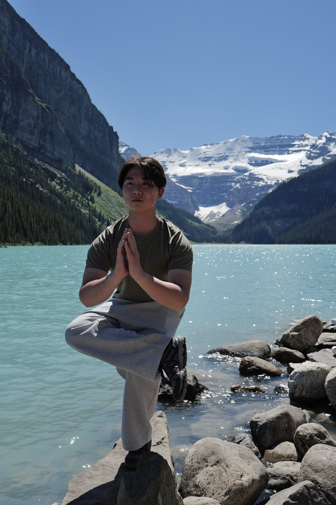
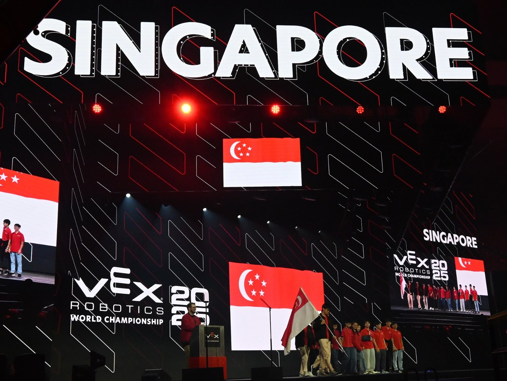

knto
.
creates
Designs
About me

Hi, I'm Joey.
I make
things.
Scroll down to learn more about me
VEX Robotics

That's me!
I'm the designer on my robotics team. I CAD our robot in Fusion 360 and simulate each mechanism, so we know it works before anything gets built.